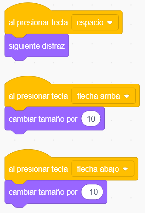

1. Drawing costumes¶
In this exercise we are going to program a game.

We start the Scratch editor.
Click language button
 upper menu bar and select English.
upper menu bar and select English.Añadimos una nueva extensión con el botón añadir extensión
 abajo a la izquierda.
abajo a la izquierda.Seleccionamos la extensión Lápiz para poder dibujar.

En la barra de código aparecerá un nuevo icono, el Lápiz
 , con instrucciones de color verde oscuro.
, con instrucciones de color verde oscuro.En la pestaña disfraces
 ,
borramos uno de los disfraces del gato y añadimos varios
personajes más que nos gusten.
,
borramos uno de los disfraces del gato y añadimos varios
personajes más que nos gusten.
Ahora en la pestaña de código
 , vamos a
añadir un pequeño programa que se ejecute al hacer clic
en la bandera.
, vamos a
añadir un pequeño programa que se ejecute al hacer clic
en la bandera.
Press the green flag
 to test the operation of the program.
to test the operation of the program.Al pulsar la bandera toda la pantalla se borra y al mover el ratón, el gato se moverá por la pantalla.
Completaremos el programa con funciones para la pulsación de varias teclas.

Press the green flag
to test the operation of the program.Ahora al pulsar las teclas de flechas el disfraz aumenta y disminuye de tamaño y gira de derecha a izquierda.
Con la tecla espacio cambiará el disfraz.
Al hacer clic en la pantalla el disfraz quedará sellado.
{kind=link}
Ejercicios¶
Inventa un dibujo hecho con varios disfraces sellados en la pantalla, con diferentes tamaños y giros.
Añade nuevos disfraces y un escenario para hacer un dibujo más completo.
Añade una nueva función para que al presionar la tecla "a" se selle en la pantalla el disfraz 24 veces. Cada vez que se selle, el disfraz girará 15 grados.
Añade una nueva función para que al presionar la tecla "b" se selle en la pantalla el disfraz 6 veces. Cada vez que se selle, el disfraz aumentará de tamaño por 10.